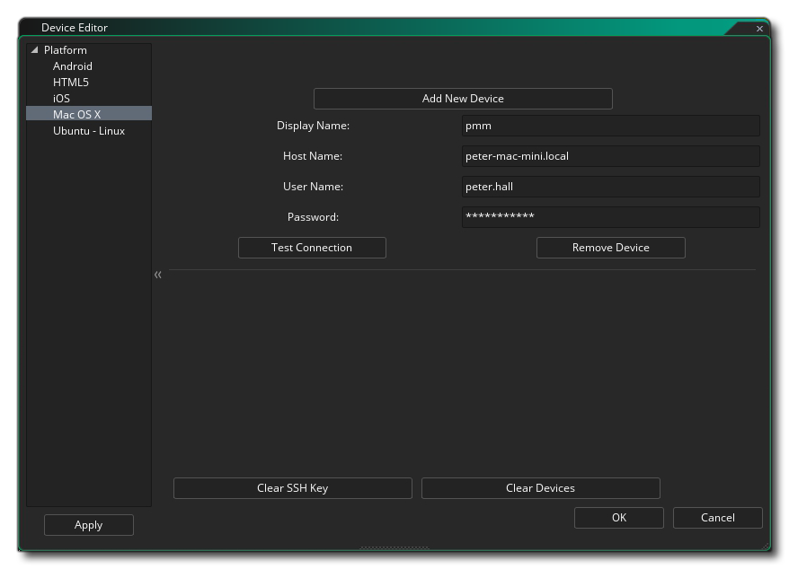

The Device Manager is accessed by clicking  on the
pencil button
on the
pencil button  within the Target List:
within the Target List:

Clicking this button will open the Device Manager where you can configure different devices for the target platforms that you wish to compile and test on (note that the platforms available will depend on the Licence that you have and not all of them may be visible). Below you can find details on configuring devices for each of the target platforms:

Here you can click on the Add New Device button to add a new Android device to the list manually, or you can click the Detect Device button to have GameMaker Studio 2 automatically detect any devices connected through a wired connection. You can also set up an Android Virtual Device by clicking the button marked Run AVD. This will open up the Android Virtual Device manager where you can create a new AVD (see here for more information). Once you have one created, you need to launch it from the AVD manager and then in GameMaker Studio 2 click on the Detect Device button and it should be added automatically to the device list:
Once you have a device added, you can then check the connection using the Test Device button or remove it from the list again by clicking the Remove Device button.

The HTML5 device manager is for adding different browsers to the device list for targeting when running. You need to click the Add New Browser button and then give the device a name and point GameMaker Studio 2 to the path for the browser executable. You can also set the port number (default is 51264) should there be any conflicts as well set the allowed webserver, hostnames and CIDR IP ranges as necessary.

Before you can set up your iOS devices, you must have set up your Mac device and tested it's connection (see below for details). Once that is done you can select the Mac that you want to target from the drop down menu at the top of the window and then click the Detect Device button to have GameMaker Studio 2 automatically find any connected iOS devices. Once connected, the device details will be shown in the list in this window.

To add a Mac device to the manager, you must first click on the button labelled Add New device which will add the device and create some blank fields which you will need to fill in to enable the connection. First you need to name the device so that you can identify it in the target list and then give the host name (or IP) of the Mac. You must then give the username of the user that you wish to link to, and the password that they used. When that is all done, you can click on the Test Connection button to make sure that GameMaker Studio 2 can communicate with the Mac. Note that if you are developing for iOS then you must have done this first and have established a working connection to the Mac you wish to use for development.
注意： Please note that you must have enabled Remote Login on the target mac. This can be done by going to Preferences -> Sharing and Enable Remote Login for the user you want to be able to login.
The Mac device window also has an option at the bottom to Clear SSH Keys, which is used to clear the Secure Shell Hash. This is provided as an option for those users that have changed Mac, or re-installed the OS on their current one, and need to re-configure their secure keys.

To add an Ubuntu (Linux) device to the manager, you must first click on the button labelled Add New device which will add the device and create some blank fields which you will need to fill in to enable the connection. First you need to name the device so that you can identify it in the target list and then give the host name (or IP) of the Ubuntu machine (or VM). You must then give the username of the user that you wish to link to, and the password that they used. You are also required to give a folder on the Ubuntu machine that you want to use for installing your projects. and when that is all done, you can click on the Test Connection button to make sure that GameMaker Studio 2 can communicate with the Ubuntu machine.

All the different device windows have an option at the bottom to Clear Devices which, when clicked, will remove all the connected devices from the list.
Once you have set up your devices, you can then connect to any
one of them from the Target options at the top of the GameMaker
Studio 2 IDE and testing/building your game will push the
project to that device: